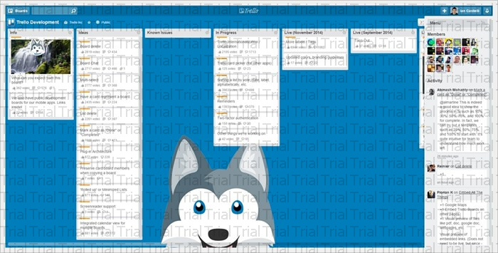

Mi favorito personal es el atajo “b”, que abre el menú de tableros y te permite buscar tableros instantáneamente. Pulsa “b”, escribe las primeras letras del tablero que estás buscando, pulsa “Intro” y estás ahí. Es la forma más rápida de cambiar tableros.
Otro favorito es “f”, que abre el filtro de tarjetas mientras estás en un tablero. Puedes empezar a buscar al instante tarjetas por el título. El filtro también te puede sugerir miembros y etiquetas, así que puedes empezar a escribir “da” y te mostrará como sugerencia “Daniel”. Pulsa “Intro” para ver las tarjetas asignadas a él. Pulsa “x” para limpiar un filtro.